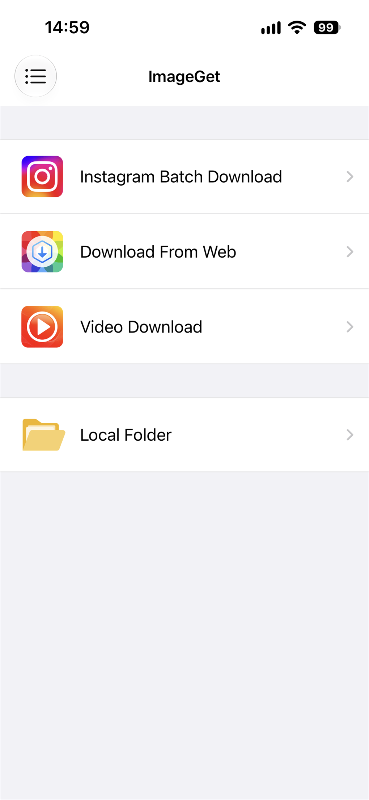
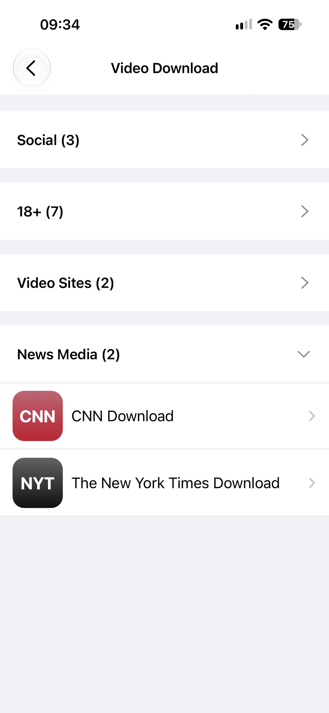

Come scaricare video da CNN e The New York Times
I siti di informazione non consegnano i clip come file. CNN e The New York Times riproducono il video dentro una pagina — un articolo, una sezione video, un live — e il player non ha un pulsante di salvataggio. Il rimedio abituale è un sito di conversione che si blocca sul player incorporato, oppure una registrazione dello schermo con i comandi del player dentro l'immagine. ImageGet legge la pagina ed estrae il file video. Ecco come funziona.
Scarica ImageGet gratis — salva video di attualità con un tocco.
Scarica ImageGetPasso 1: apri ImageGet e tocca Video Download
Apri ImageGet. Nella schermata principale tocca Video Download, la sezione che raccoglie tutti gli strumenti video dell'app.

Passo 2: apri News Media e scegli il sito
Gli strumenti video sono raggruppati per categoria: apri News Media, che contiene CNN Download e The New York Times Download. Scegli quello che corrisponde alla pagina da salvare; l'app passa alla modalità di quel sito e attende un link.

Passo 3: copia il link della pagina in cui viene riprodotto il video
Apri l'articolo in un browser e trova il video. Copia l'URL dalla barra degli indirizzi: la pagina dell'articolo o del video, non la home della sezione né la home page. Anche un link di condivisione breve va bene, purché apra la pagina in cui il video viene davvero riprodotto.
Passo 4: incollalo in ImageGet e tocca Analyze
Incolla il link nel campo e tocca Analyze. ImageGet legge la pagina ed estrae il file video, non l'immagine di copertina né le miniature intorno. Entrambe le schermate tengono una scorciatoia in basso — cnn.com o nytimes.com — per aprire il sito nel browser di ImageGet e copiare lì un link.
Passo 5: scegli una versione e scarica
ImageGet elenca ciò che la pagina serve davvero: i clip di attualità esistono spesso in più risoluzioni. Tocca quella che vuoi, poi Download. Il video viene salvato nella libreria foto e si riproduce offline, senza comandi del player e senza pubblicità sopra.
Consigli per salvare video da CNN e The New York Times
- Download gratuiti — il piano gratuito include 3 download di video; Premium toglie il limite e la pubblicità.
- Il contenuto per abbonati resta bloccato — Un video che si riproduce sulla pagina può essere salvato. Se si riproduce solo per gli abbonati con accesso, non c'è un file da prendere, e ImageGet non lo sblocca.
- Una diretta non è un clip — Se una pagina riproduce solo un flusso in diretta in corso, potrebbe non esserci un file finito da salvare. I clip pubblicati e gli articoli video funzionano.
- Il materiale giornalistico è protetto da diritti — Tieni ciò che salvi per uso personale e cita la testata e l'operatore se lo condividi.
Domande frequenti
Posso scaricare video da CNN e The New York Times gratuitamente?
Sì: il piano gratuito include 3 download di video. Con Premium hai download illimitati e nessuna pubblicità.
Funziona con i video riservati agli abbonati?
Salva ciò che la pagina serve davvero. Un video che per te si riproduce sulla pagina può essere scaricato; uno che resta dietro un abbonamento o un accesso non ha un file da prendere, e ImageGet non lo sblocca.
Posso scegliere la qualità del video?
Se la pagina offre più di una versione, ImageGet le elenca tutte così scegli una risoluzione prima di salvare.
Lo vedi. Lo salvi. Semplice.
Scarica ImageGet gratis e salva video di attualità con un tocco.
Scarica ImageGetGuide correlate
- Come scaricare video da CNN e The New York Times
- Come scaricare video da EPORNER
- Come scaricare video da xVideos
- Come scaricare video da bilibili
- Come scaricare video da ManyVids
- Come scaricare video da XNXX
- Come scaricare video da TNAFlix
- Come scaricare video da RedGifs
- Scopri tutti i siti supportati